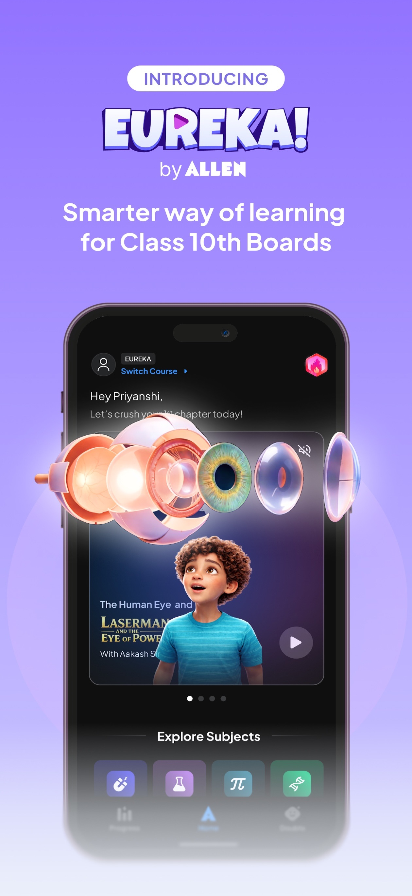
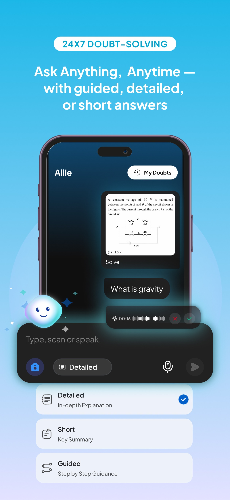
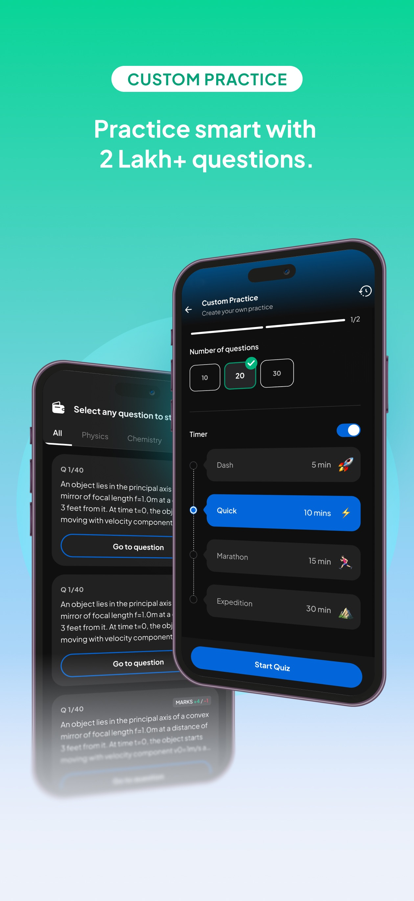
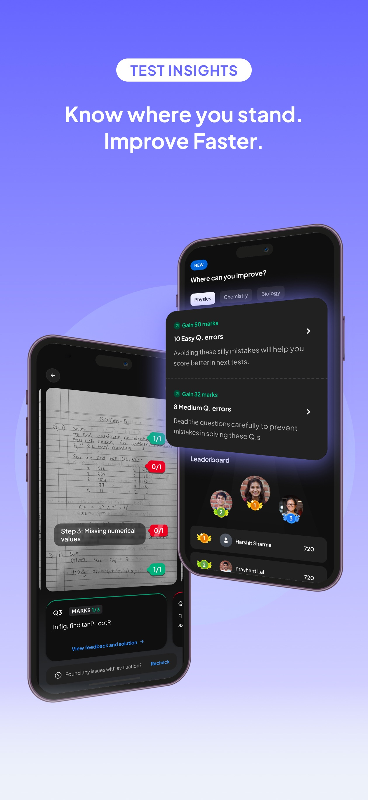

01 — EDTECH
ALLEN DIGITAL 2023 — PRESENT
Building the iOS
learning experience.
Joined as the first iOS engineer and established the foundation for ALLEN’s iOS platform. Shipped learning experiences that bring live instruction and active participation into one app.
MY CONTRIBUTIONPlatform architecture · SwiftUI · MVVM · Modular design
View on the App StoreCURRENT APP STORE IMAGERYSource ↗




Current listing imagery; screens may differ from the features I worked on.
PLATFORM FOUNDATIONS1M+ LEARNERSSWIFTUI / MVVM